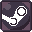
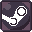

Juegos
A
Age of Empires 2: Definitive Edition
4.0/5.0
1 a 8 Jugadores
 

Info Técninca
- OS: Windows 10 64bit
- Processor: Intel Core 2 Duo o AMD Athlon 64x2 5600+
- Memoria: 4 GB RAM
- Graphicos: NVIDIA® GeForce® GT 420 o ATI™ Radeon™ HD 6850 o Intel® HD Graphics 4000 or better with 2 GB VRAM
- DirectX: Version 11
- Espacio: 30 GB available space
Reseña
Juego RTS clásico de excelencia, teniendo más jugadores que el Starcraft 2. Con su setting medieval y un grupo de jugadores más grande, lo que permite a un novato un acceso más fácil, aunque más complicado sea por ser un RTS.
Among Us
4.0/5.0
3 a 15 Jugadores
Info Técninca
- Computadora: si.
Reseña
En épocas de cuarentena, este juego indie explotó en popularidad gracias a ser gratis, el engaño es lo que lleva este juego a la grandeza. El juego está centrado en que uno o más de los participantes quieren matar al resto, para ello utilizarán el engaño y asesinatos.
B
Borderlands 2
2.0/5.0
1 a 4 Jugadores
Info Técninca
- Computadora: si.
- Memoria: 2GB RAM.
Reseña
Si alguien menciona RPG FPS es la primera franquicia que viene a la mente. poseyendo un gran humor y estilo gráfico. Sin embargo, el juego deja más que desear, puede llegar a ser muy divertido en modo cooperativo, pero solo por la interacción entre jugadores y no por el juego en sí.
C
Cards Against Humanity
3.5/5.0
2 a 10 Jugadores
Info Técninca
- Uno puede crear un juego de cartas personal sabiendo las reglas.
- No se recomienda jugar con personas que sabes que serán ofendidas por el juego.
Reseña
Cards Against Humanity o Hijo de P*ta en español es un juego de cartas en el que uno trata de combinar una o mas de sus cartas con la del lector para ser elegido sobre el resto, ganando un puto. El punto ganado es al criterio del lector sea la combinación más ofensiva como la más graciosa.
Castle Crashers
3.0/5.0
1 a 4 Jugadores
Info Técninca
- Computadora: si.
Reseña
Un clásico brawler 2d cuyo objetivo es derrotar a todos los enemigos y rescatar a la princesa. Al bajo costo que está estos días es una oferta difícil de rechazar por varias horas de diversión.
D
Divinity: Original Sin 1
3.5/5.0
1 a 2 Jugadores
Info Técninca
- OS: Windows 7 SP1 64-bit or Windows 8.1 64-bit or Windows 10 64-bit.
- Procesador: Intel Core2 Duo E6600 o equivalente
- Memoria: 2048 MB RAM
- Graphicos: DirectX 11 Compatible GPU
- DirectX: Version 11
- Espacio: 10000 MB
Reseña
Un juego de RPG diseñado para jugar de a 2, una historia más centrada en comedia en comparación a su secuela, con su precio bajo es una gran elección. Se recomienda jugar a este antes que el original simplemente porque el 2 mejora tanto que la comparación a su secuela lo hace parecer peor de lo que es.
Divinity: Original Sin 2
5.0/5.0
1 a 4 Jugadores
Info Técninca
- OS: Windows 7 SP1 64-bit or Windows 8.1 64-bit or Windows 10 64-bit
- Procesador: Intel Core i5 o equivalente
- Memoria: 4 GB RAM
- Graphicos: NVIDIA® GeForce® GTX 550 or ATI™ Radeon™ HD 6XXX o superior
- DirectX: Version 11
- Espacio: 60 GB
Reseña
Un juego RPG a tiempo real pero conversaciones y combate por turnos, si bien se puede jugar solo, eso escapa el propósito de la página y se disfruta mucho más jugando con varios amigos. Con un sistema de combate bien pensado e historia variada con tonos serios donde las decisiones importan, es una de las recomendaciones más grandes que les damos en este sitio.
Claramente mejora en casi todos los aspectos al original y si bien las historias no están totalmente conectadas, se recomienda jugar al 1 primero.
Duck Game
4.5/5.0
1 a 4 Jugadores
Info Técninca
- Una computadora con Windows 7 funcional.
- 150 MB de espacio.
- 1G de RAM.
Reseña
Duck game es un juego rápido de arena todos contra todos, donde el objetivo es ser el último con vida, sea por matar al resto o destrucción mutua de tus compañeros. Si bien es un concepto simple, esto permite que jugadores nuevos lo puedan agarrar y jugar fácilmente y el hecho de que sea tanto online como local y soporte el uso de controles, permite que un grupo de amigos la pase genial una tarde. Además, el bajo precio de este juego, la venta en descuento de un paquete de 4 y el requerimiento prácticamente inexistente de la máquina, permite que sea muy accesible.
El único motivo por el cual no consigue una calificación perfecta es que los desniveles de nivel de jugador llevan a resultados predecibles.
Dungeons&Dragons: 5ta Edición
5.0/5.0
2 a 8 o más jugadores
Info Técninca
- Requiere un juego de dados que contenga al menos 1 dado de 20 caras, 12 caras, 10 caras, 8 caras, 6 caras y 4 caras, es ideal tener más copias (o un software de dados).
- Las reglas básicas son gratis, pero se recomienda enormemente tener la guía de jugadores ("Players Handbook") y la guía del DM ("Dungeon Masters Guide").
- No requiere un tablero ni figuras pero es altamente recomendado(virtualmente se puede utilizar roll20).
- Sesiones de 2h+.
- Campañas de 1 sesion a años.
Reseña
D&D es un juego de mesa basado en roles, en el que se espera que el Maestro de los calabozos (llamado DM de aquí en adelante), diseña aventuras o corre campañas prearmadas para un grupo de aventureros (llamado PJ de aquí en adelante). En este juego influye en gran parte el azar, ya que para la mayoría de los resultados son determinados por los dados, pero este a su vez es influenciado por los atributos y las proficiencias de los distintos personajes, permitiendo manipular el resultado. El juego se podría describir como un grupo de amigos contando una historia entre ellos.
Si bien a este juego le damos la puntuación máxima, cabe mencionar que se requiere leer las reglas anteriormente con cuidado para entender lo que uno hace en el juego o tener a alguien con experiencia previa en el juego, cosa que es aún más marcado para el DM. Aun así, consideramos que este juego lo vale. Por otro lado, este es un juego que fue diseñado para ser jugado en persona, este puede ser jugado virtualmente en distintas páginas y simuladores en internet, pero creemos que en persona, y de lo posible con figuras y un tablero para marcador de buen tamaño presenta una mejor experiencia. Creemos acá, que por más que uno sienta inicialmente vergüenza en jugar este tipo de juego, uno debería experimentarlo al menos una vez.
E
F
G
H
Hammerwatch
3.0/5.0
1 a 4 Jugadores
Info Técninca
- Computadora: si.
Reseña
Con gráficos del estilo pixel y una vista desde arriba, es un juego cuyo objetivo es llegar al fondo del laberinto. Sin embargo, su dificultad puede ser brutal para varios.
I
J
K
L
M
Monopoly
2.0/5.0
2 a 8 Jugadores
Info Técninca
- Mínimo de 4h.
- Se pueden sustituir la ficha de jugadores y los dados, pero no mucho más.
Reseña
Uno de los juegos de mesa más conocidos, teniendo cientos de versiones tanto de mesa como virtuales. Si bien es un juego muy popular y simple de jugar, ofrece muy poco al jugador en términos de jugabilidad y las partidas son muy largas para lo poco que puede influenciar el jugador al resultado. Llega a 2 solo por poder jugar como un dedal o una bota.
N
Ñ
O
P
Portal 2
5.0/5.0
1 a 2 Jugadores
Info Técninca
- Computadora: si.
- Memoria: 2GB RAM.
Reseña
Una de las recomendaciones más fuertes de este sitio, portal 2 en modo multijugador. un juego de rompecabezas cooperativo con campaña cooperativa y mapas modeados para repetición infinita, si les gusta resolver/frustrarse rompecabezas con sus amigos, comprenlo ya, siempre está a un precio muy barato.
Q
R
Rocket League
3.5/5.0
1 a 8 Jugadores
Info Técninca
- OS: Windows 7 (64 bit) or Newer (64 bit) Windows OS
- Procesador: 2.5 GHz Dual core
- Memoria: 4 GB RAM
- GeForce 760, AMD Radeon R7 270X, o better
- Espacio: 20 GB
Reseña
¿Qué sucedería si cruzas fútbol con autos? La respuesta es rocket league. Actualmente gratis, es un juego muy divertido para jugar con amigos, pero su naturaleza multijugadora competitiva hace que el nivel de jugadores esté bastante por encima a la de un novato. Sin embargo, al ser gratis, no estaría de más darle una prueba.
S
Settlers of Catan
4.5/5.0
3 a 10 Jugadores
Info Técninca
- Requiere comprarlo.
Reseña
Un juego de mesa simple pero profundo donde se compite en una carrera por puntos. Sea por cantidad o nivel de sus ciudades, caminos, ejércitos o cartas de victoria, es uno de los juegos de mesa que más recomendamos.
Starbound
3.0/5.0
1 a 4 Jugadores
Info Técninca
- Computadora: si.
Reseña
Conocido vulgarmente como terraria en el espacio, es un buen juego, pero teniendo terraria como una posibilidad, preferiría jugar a terraria primero. Pero, si uno terminó terraria y desea mas, esta es una alternativa sólida.
T
Tabletop Simulator
5.0/5.0
1 a 10 Jugadores
Info Técninca
- Computadora: si.
- Memoria: 4GB RAM
Reseña
Un simulador de juegos de mesa con muchos juegos importados por usuarios para uso fácil. Altamente recomendado para jugar a distancia o probar juegos de mesa que serían muy caros por su costo material. Es muy fácil introducir a tus amigos a juegos de mesa con este programa.
Terraria
4.0/5.0
1 a 4 Jugadores
Info Técninca
- Computadora: si.
Reseña
Minecraft en 2D, pero con combate espectacular. Simplista y difícil, un gran juego para jugar con compañeros, aunque a medida que avanza el juego, es mejor que entiendan las mecánicas o sufran las consecuencias.
Truco
3.0/5.0
2 a 6 Jugadores
Info Técninca
- Un mazo de cartas españolas (puede no tener comodines, ochos y nueves)
Reseña
El juego de cartas de Sudamérica por excelencia. Jugandose por puntos, es uno de los juegos de mazo de cartas comunes que permite ser jugado en su totalidad sin requerir apuestas. Las reglas son relativamente sencillas y los materiales (mazo de cartas españolas, papel y lápiz) son muy sencillos de adquirir.
Lo que destaca a este juego por encima del resto, es el nivel de juegos mentales utilizados para "robar"puntos, lo que le da una repetición infinita al juego y permite que supere el azar para que influencie la habilidad del jugador al resultado.
U
Uno
4.0/5.0
2 a 10 Jugadores
Info Técninca
- Un mazo de Cartas de Uno.
- Hay versiones más avanzadas como el Uno Spin que son más caras.
- Hay muchas reglas personalizadas como 0 y 7 y sumar +2 con +4.
Reseña
Un juego simple que consiste de un mazo de cartas especiales en el que el objetivo es ser el primero en quedarse sin cartas. Son reglas simples y es difícil hacer planes más que adivinar qué colores de cartas/número/tipo tiene el otro, pero el poder arruinar la partida a tu compañero al elegir la carta correcta es muy gratificante.
V
W
X
Y
Z
↑